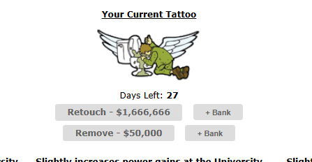

What does it do?
Retouching or removing a tattoo requires precise amounts of cash. The Tattoo Parlor Helper automatically reads these costs and injects Bank Withdraw buttons next to the links.
Visual Example
Here are the injected Bank buttons next to the Retouch and Remove options:

How to use it
- Visit the Tattoo Parlor when you already have an active tattoo.
- Click the + Bank button next to either the Retouch or Remove option.
- The exact dollar amount will be instantly queued up for withdrawal at the Piggy Bank!